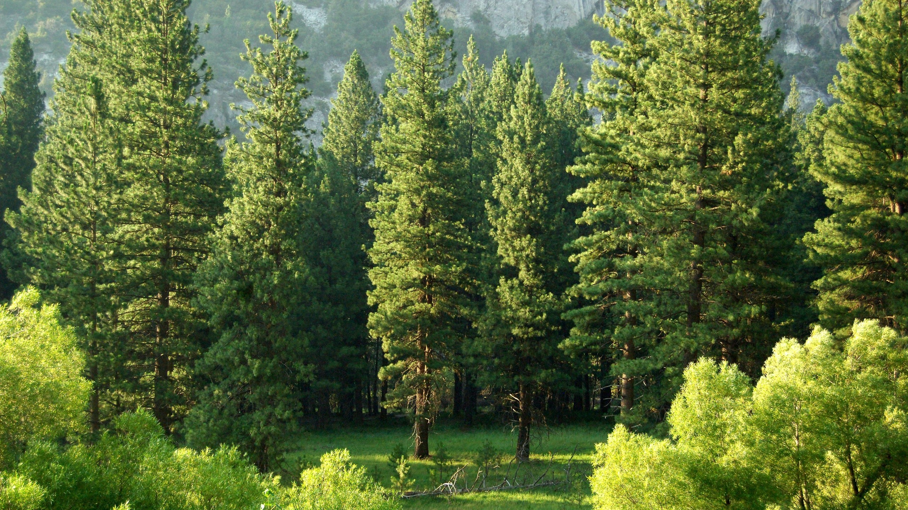
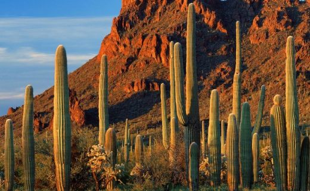
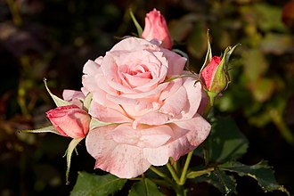

Bitkiler
Bitkiler, ağırlıklı olarak fotosentetik ökaryot canlılardır. Tarihsel olarak bitkiler alemi, algler ve mantarlar da dahil olmak üzere hayvan olmayan tüm canlıları kapsarken, günümüzde mevcut tüm tanımlamalar prokaryotları, mantarları ve bazı algleri hariç tutar. Tanımlamalardan birine göre: Çiçekli bitkiler, kozalaklı bitkiler ve diğer açık tohumlular, eğrelti otları ve benzerleri, boynuz otları, ciğer otları, kara yosunları ve yeşil algler hep birlikte Viridiplantae (Latince "yeşil bitkiler") adı verilen kladı oluştururlar. Buna kırmızı ve esmer algler dahil değildir. Bitkilerin çoğu çok hücreli canlılardır. Yeşil bitkiler; enerjilerinin çoğunu, siyanobakterilerle endosimbiyoz sonucu oluştuğu düşünülen kloroplastları aracılığıyla, fotosentez yoluyla, güneş ışığından elde ederler. Kloroplastlar, bitkilere yeşil rengini veren klorofil a ve b'yi içeri. Bazı bitkiler parazitik veya mikotropiktirler ve normal miktarlarda klorofil üretme ya da fotosentez yapma yeteneklerini kaybetmişlerdir ancak yine de çiçekleri, meyveleri ve tohumları vardır. Bitkilerde eşeysiz üreme yaygın olarak görülmesine karşın eşeyli üreme ve nesillerin değişimi karakteristik özellikleridir. 320,000 civarında bitki türü vardır ve bunların büyük çoğunluğu (260,000 ila 290,000 kadarı) tohum üretir. Yeşil bitkiler, Dünya'nın moleküler oksijeninin önemli bir bölümünü üretirler ve ekosistemlerin çoğuna temel teşkil ederler. Tahıl, meyve ve sebze üreten bitkiler insan beslenmesinin temelini oluştururlar ve binlerce yıldır evcilleştirilmektedirler. Bitkilerin; süsleme amacıyla, yapı malzemesi olarak, yazı malzemesi olarak ve kültürel açıdan birçok kullanımı vardır. Ayrıca bitkiler, ilaçlar ve psikoaktif maddeler için çok önemli bir kaynaktır. Bitkiler konusunda yapılan bilimsel çalışmalar biyolojinin bir alt dalı olan botaniğin konusudur.
Kaktüsler

Kaktüs Caryophyllales takımının 1750 kadar bilinen türüne ve yaklaşık 127 cinsine sahip Cactaceae bitki familyasının bir üyesidir. "Kaktüs" kelimesi Latince aracılığıyla, Theophrastus tarafından kimliği kesin olmayan dikenli bir bitki için kullanılan Antik Yunanca (yunanca:κάκτος, okunuşu:kaktos) kelimesinden türemiştir. Kaktüsler çok çeşitli şekil ve boyutlardadır. Çoğu kaktüs, en azından biraz kuraklığa maruz kalan habitatlarda yaşar. Birçoğu, dünyanın en kurak yerlerinden biri olan Atacama Çölü 'nde bulunsa bile, aşırı derecede kuru ortamlarda yaşarlar. Kaktüsler suyu korumak için birçok uyum gösterirler. Hemen hemen tüm kaktüsler sukulent dir, yani kalınlaşmış, etli kısımları suyu depolamak için uyarlanmıştır. Diğer birçok sulu meyvenin aksine, gövde, bu hayati sürecin gerçekleştiği çoğu kaktüsün tek parçasıdır. Çoğu kaktüs türü gerçek yapraklarını kaybetmiş, yalnızca oldukça değişmiş yapraklar olan dikenler kalmıştır. Dikenler, otoburlara karşı savunmanın yanı sıra, kaktüse yakın hava akışını azaltarak ve biraz gölge sağlayarak su kaybını önlemeye yardımcı olur. Yaprakların yokluğunda, büyümüş gövdesi fotosentez yapar. Kaktüsler Amerika'nın güneyindeki Patagonya 'dan kuzeyindeki batı Kanada 'ya olmak üzere - Afrika'da ve Sri Lanka'da yetişen Rhipsalis baccifera haricinde genelde Amerika kıtasına özgüdür. Kaktüs dikenleri areole denilen, oldukça küçültülmüş bir dal türü olan özel yapılardan üretilir. Areoller, kaktüslerin belirleyici bir özelliğidir. Dikenlerin yanı sıra, areoller genellikle boru şeklinde ve çok boyutlu çiçek açarlar. Pek çok kaktüsün kısa büyüme mevsimi ve uzun uyku dönemleri vardır ve yer yüzeyine ulaşan suyu hızla emen geniş ama nispeten sığ bir kök sisteminin yardımıyla herhangi bir yağmura hızlı tepki verebilir. Kaktüs gövdeleri genellikle nervürlü veya yivlidir bu da yağmurdan sonra hızlı su emilimi için kolayca genişlemelerine ve büzülmelerine ve ardından uzun kuraklık sürelerine imkan verir. Diğer sukulent bitkiler gibi kaktüslerin çoğu da fotosentezin bir parçası olarak "crassulacean asit metabolizması" (CAM) adı verilen özel bir mekanizmayı kullanır. Karbondioksitin bitkiye girdiği ve suyun çıktığı terleme, fotosentezle aynı anda gündüzün değil geceleyin olur. Bitki aldığı karbondioksidi malik asit olarak depolar, onu gün ışığı dönene kadar tutar ve ancak o zaman fotosentezde kullanır. Terleme daha soğuk, daha nemli gece saatlerinde gerçekleştiği için su kaybı çok azalır. Daha küçük kaktüslerin çoğu suyu depolamak için mümkün olan en büyük hacmi ve terleme kaynaklı su kaybını azaltmak için de olası en az yüzey alanını birleştiren küre şeklinde gövdeleri vardır. En uzun kaktüsün boyu 78 fit (24 m) olarak ölçüldü. Serbest duran kaktüs Pachycereus pringlei 'nin kaydedilen maksimum yüksekliği 19,2 m (63 ft) ve en kısası Blossfeldia liliputiana olgunken sadece yaklaşık 1 cm (0,4 in) dir. Tam büyümüş bir saguaronun (Carnegiea gigantea) bir yağmur fırtınasında 200 U.S. gallon (760 l; 170 imp gal) kadar su emebildiği söylenir. Birkaç türün görünüşü en azından yüzeysel olarak familyanın çoğundan çok farklıdır. Leuenbergeria, Rhodocactus ve Pereskia cinslerinin bitkileri çevrelerinde büyüyen diğer ağaçlara ve çalılara benzer. Kalıcı yaprakları vardır ve daha yaşlı olduklarında kabukla kaplı gövdeleri vardır. Areolleri onları kaktüsler olarak tanımlar ve görünüşlerine rağmen onların da su tasarrufu için birçok uyumu vardır. "Leuenbergeria" tüm kaktüslerin evrimleştiği atalardan kalma türlere yakın kabul edilir. Tropikal bölgelerdeki diğer kaktüsler ormana tırmanıcı ve epifit (ağaçlarda büyüyen bitkiler) olarak büyür. Sapları genellikle düz, neredeyse yaprak benzeri görünümlü, daha az dikenli veya iyi bilinen Noel kaktüsü veya Şükran Günü kaktüsü (Schlumbergera cinsi) gibi dikensizdir. Kaktüslerin çeşitli kullanımları vardır: birçok türü süs bitkisi olarak, diğerleri yem veya yiyecek için (özellikle meyveleri) yetiştirilir. Cochineal, bazı kaktüslerde yaşayan ve kırmızı boya yapmakta kullanılan bir böceğin ürünüdür. Hem Eski hem de Yeni Dünya 'daki sukulentler - bazıları Euphorbiaceae (euphorbias) gibi - kaktüslere çarpıcı benzerlik gösterir ve bu yanlış olabilir ama yaygın kullanımda "kaktüs" olarak adlandırılır. Çölde yetişen Saguaro en büyük kaktüslerden biridir. Yetişkinleri genellikle 12 metre boya ulaşır, nadiren de 15 metreyi aşanları bulunur. Kaktüsler çok yağış ve su istemeyen bitkilerdir. Genellikle çöllerde ve sıcak iklimlerde yetişirler. Kökleri çok uzun ve kalındır. Bu özellikleri ve yapraklarının diken şeklinde olması onları diğer bitkilerden ayırır. Kaktüslerin eni ve boyu iyi beslendiği takdirde oldukça uzundur. Bazı kaktüslerin dikenleri zehirli olabileceği gibi, her şekilde deriye battığında ince dikenleri yüzünden can acıtabilirler ve çıkarılmaları duruma göre zor olabilir. Tüm kaktüs çeşitleri diken bulundurmaz ve peyote gibi dikensiz kaktüs türleri de vardır.
Güller

Gül, gülgiller (Rosaceae) familyasının Rosa cinsinden, odunsu çok yıllık kapalı tohumlu güzel kokulu bitki türlerine verilen ad. Çoğu gül türünün ana vatanı Asya'dır. Daha az sayıda türleri Avrupa, Kuzey Amerika ve Kuzeybatı Afrika'da yetişir. Güller yaygın olarak güzellikleri ve kokuları için yetiştirilir ve birçok toplumda kültürel öneme sahiptir. Park ve bahçelerin süslenmesinde kullanıldığı gibi odaları, balkon ve terasları süsler. Birçok rengi vardır. Kesme çiçekçilikte çok talep edilen bir çiçektir.